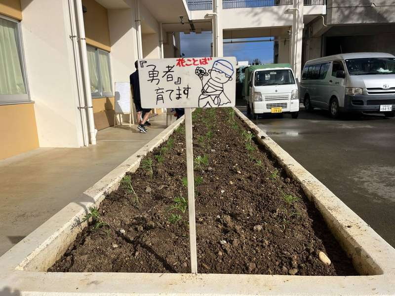
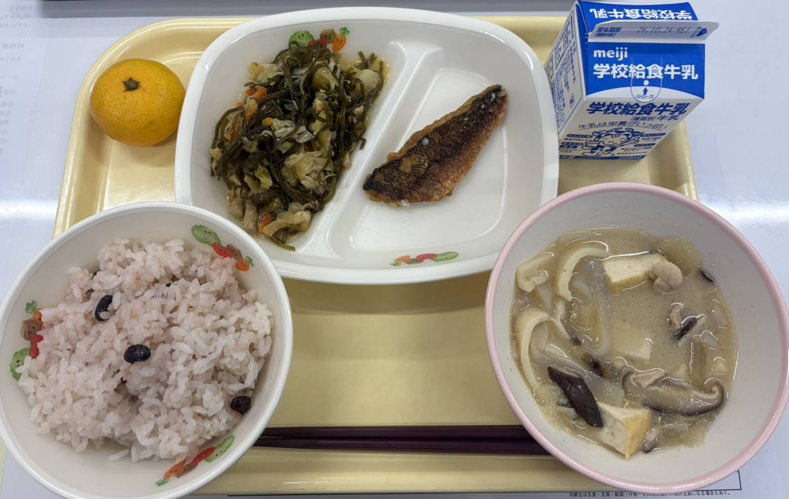

活動のようす
活動の記録を新しい順に並べています。活動名で絞り込めます。
写真で見る名護中




学校のホームページから
名護中学校のホームページに載った、CS に関わる記事です（学校のページが開きます）。
学生ボランティアの Instagram から
朝ごはんPJ などを支える学生ボランティアの団体の投稿です（Instagram が開きます）。
活動の記録を新しい順に並べています。活動名で絞り込めます。


名護中学校のホームページに載った、CS に関わる記事です（学校のページが開きます）。
朝ごはんPJ などを支える学生ボランティアの団体の投稿です（Instagram が開きます）。